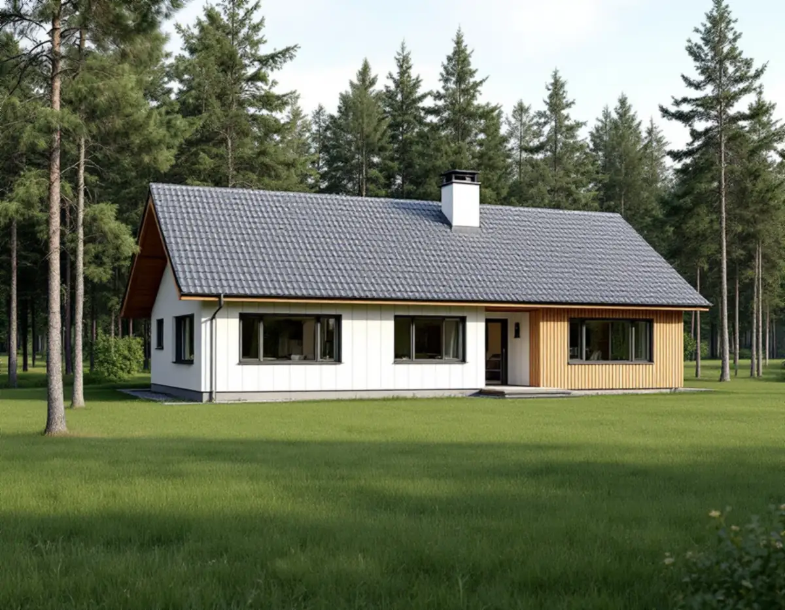
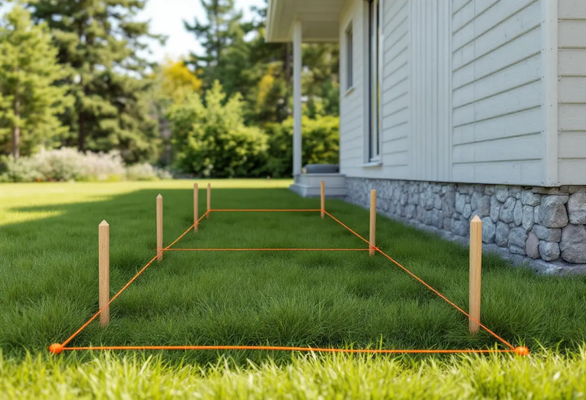

Platsbesök
Vi går igenom huset, tomten och hur marken lutar.
Ett byggprojekt i Tyresö har flera kontrollpunkter mellan idé och inflyttning: lov eller anmälan, startbesked, utstakning, lägeskontroll och slutbesked. Hoppar man över någon kan det bli ett tillsynsärende. Geal Entreprenad AB driver byggprojekt i Tyresö som total entreprenad och håller ordning på stegen åt dig, med en kontakt genom hela bygget.

Tyresö kommun beskriver de nya reglerna från den 1 december 2025 så här: bygger du till ett en- eller tvåbostadshus med mer än sammantaget 30 kvadratmeter krävs bygglov. Inom kulturhistoriskt särskilt värdefulla områden och riksintressen för kulturmiljövården krävs alltid bygglov. Kommunen påpekar att sådana områden kan finnas i översiktsplanen, kulturmiljöprogrammet eller detaljplanen, men att informationen inte alltid är uppdaterad, och rekommenderar att man hör av sig.
Även en lovfri tillbyggnad kan kräva anmälan och startbesked, till exempel när byggnadens konstruktion berörs eller när vatten och avlopp eller en eldstad installeras. Många åtgärder granskas inte längre av kommunen innan de görs, och då behöver du själv kontrollera att reglerna följs. Den som vill ha ett beslut att luta sig mot kan söka frivilligt bygglov.
Vi går igenom vilken kategori ditt projekt hamnar i innan något beställs, oavsett om det gäller en tillbyggnad, ett komplementbostadshus eller ett helt nytt hus.

Plan- och bygglagen säger att en åtgärd som kräver bygglov eller anmälan inte får påbörjas innan byggnadsnämnden har gett startbesked. Byggnaden får inte heller tas i bruk innan nämnden har gett slutbesked, om den inte beslutar annat. Byggherren ansvarar för att det som byggs, och projekteringen bakom, uppfyller lagens krav.
Efter startbeskedet ska kommunen enligt lagen låta staka ut byggnaden eller tillbyggnaden och markera höjdläget, om förhållandena på platsen kräver det. Är läget direkt beroende av gränsen mot grannen ska grannen kallas till utstakningen. I Tyresö är det geodataenheten på samhällsbyggnadskontoret som utför utstakning och lägeskontroll och tar fram nybyggnadskartor.
Vi planerar bygget så att utstakningen är gjord innan grunden läggs, och samlar underlaget som behövs inför slutbeskedet. Kontrollerna i kontrollplanen dokumenteras under bygget, så att inget behöver letas fram i efterhand när huset ska tas i bruk.
Tyresö kommun gör tillsyn på eget initiativ eller efter en anmälan. Enligt kommunen räknas det som olovligt byggande att bygga något som kräver lov utan att ha fått det, men också att börja bygga utan startbesked eller att flytta in utan slutbesked. Vid överträdelser kan byggnads- och tillsynsnämnden besluta om förbud, föreläggande eller rättelseföreläggande, och om någon gjort sig skyldig till olovligheter ska byggsanktionsavgift tas ut.
Kommunen påpekar också att fastighetsägaren alltid är ytterst ansvarig för fastigheten och de ändringar som görs där. Ett rättelseföreläggande kan till exempel bli aktuellt om en byggaktör inte följer det givna bygglovet. Därför bygger vi efter lovet och de ritningar som ligger till grund för det, och tar upp eventuella ändringar med dig innan de görs.
Ska tomten delas för ett nytt hus är det Lantmäteriet som beslutar, eftersom Tyresö kommun inte har någon egen lantmäterimyndighet. I detaljplanen kan du se om avstyckning är möjlig och vilken minsta tomtstorlek som gäller, och planen hittar du i kommunens webbkarta.
Kommunen ger också råd om översvämning som är bra att ta med när ett hus eller en tillbyggnad placeras: marken bör luta bort från huset, minst 15 centimeter på de första tre metrarna, och stuprör och hängrännor bör hållas i gott skick. Ändringar av fastighetens vatten- och avloppssystem ska godkännas av tekniska kontoret. Läs mer om takavvattning under plåtslagare i Tyresö.
Vi går igenom huset, tomten och hur marken lutar.
Detaljplan, kulturmiljö och om lov, anmälan eller frivilligt lov behövs.
Ett skriftligt förslag där ROT-berättigat arbete framgår.
Bygget börjar först när startbeskedet finns och huset är utstakat.
Vi samordnar alla hantverkare och behöriga installatörer för el och VVS.
Underlaget lämnas in och vi går igenom arbetet med dig.
Rotavdraget är 30 procent av arbetskostnaden, högst 50 000 kronor per person och år och högst 75 000 kronor tillsammans med rutavdrag. Material, resor och administration ger inget avdrag.
En tillbyggnad ger avdrag om den sitter ihop med husets yttervägg till minst 75 procent av någon sida eller har en dörr in till huset. Ett helt nytt hus, en friggebod eller ett garage ger inget avdrag, och inte heller bygglovshandlingar eller besiktningsman. Vi drar avdraget direkt på fakturan där det gäller.
Projektets storlek, om bygglov och kontrollplan behövs, hur grunden anpassas till berg och lutning, och hur tillbyggnaden ansluts till huset. Platsbesöket är gratis och du får ett skriftligt kostnadsförslag.
Total entreprenad för villan.
Byggfirma →Takbyte, takbesiktning och plåtarbeten.
Takläggare i Tyresö →Solberga, Raksta och Brevik.
Takrenovering i Tyresö →LTA-avlopp, källarbadrum och golvbrunn.
Badrumsrenovering i Tyresö →Timmerhus, fritidshus och villor i Tyresö.
Fasadrenovering i Tyresö →Gamla bågar och beslag i Tyresö.
Fönsterbyte i Tyresö →Fritidshus som byggts om till villor.
Golvläggare i Tyresö →Stugor som blir helårshus.
Köksrenovering i Tyresö →Rödfärgade hus, stugor och interiörer i Tyresö.
Målare i Tyresö →Stuprör, rännor och beslag i Tyresö.
Plåtslagare i Tyresö →Stugor, altaner och tillbyggnader.
Snickare i Tyresö →Byggrätten i omvandlingsområdena.
Tillbyggnad i Tyresö →